Как создать конференцию в Скайпе
Конференции в Скайпе – удобный способ сбора нескольких людей в одном групповом звонке. В ней можно, например, обговорить различные важные вещи по работе или проводить онлайн обучение. В этой статье мы поговорим о том, как создать свою конференцию, присоединиться к уже существующему групповому звонку и продемонстрировать свой экран всем участникам этой конференции.
| Как создать конференцию на ПК ↓ | Как создать конференцию на мобильном ↓ |
| Как показать презентацию ↓ | Как присоединится к беседе ↓ |
Как создать конференцию в Skype
Создать конференцию можно во время звонка с человеком или групповым чатом. В этот звонок всего лишь нужно добавить других своих контактов, вот что нужно сделать для того, чтобы создать свою конференцию:
- Откройте чат с нужным вам человеком или группой;
- В правом верхнем углу нажмите на кнопку звонка;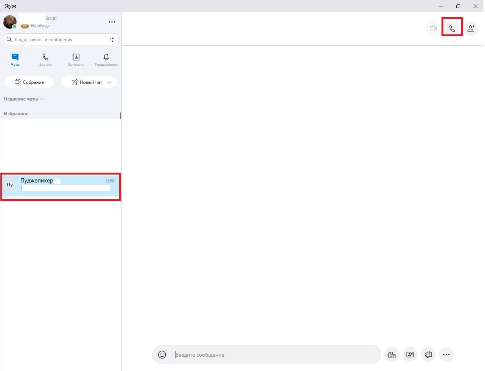
- В окне звонка в правом верхнем углу найдите иконки всех людей, которые участвуют в звонке. Найдите и нажмите кнопку для добавления новых участников;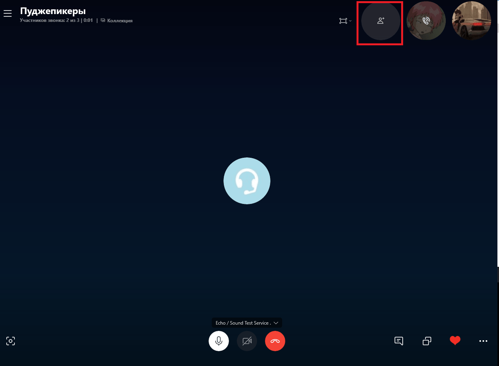
- Откроется окно «Добавление в беседу» со списком всех ваших контактов. Тут же вы найдете поисковик людей, с которым вы можете найти конкретных людей;
- Найдите нужных людей и выделите их, нажав на кружок напротив их ников так, чтобы он загорелся синим и появилась галочка;
- В беседу можно пригласить и другим способом – по ссылке, скинув ее человеку или группе людей, которых нет у вас в друзьях. Ссылку можно получить нажав на соответствующую кнопку;
- После выделения всех нужных участников нажмите «Добавить», после чего они присоединятся к конференции.
{kind=link}
{kind=link}
Внимание! В звонке могут участвовать до 25 человек, а после 11 участников возможность транслировать видео с вебки отключится.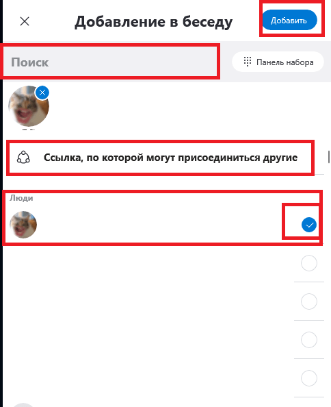
{kind=link}
После окончания звонка будет создан новый групповой чат со всеми участниками конференции. Так, вы можете удобно вновь позвонить всем ее участникам, написать всем им в группу и совершать все действия, которые можете совершать в обычной группе в Скайп. В этой группой будут связаны следующие возможности конференции.
Как показать презентацию в Скайп
В конференциях одна из самых важных функций – показ презентаций или просто рабочего стола в прямом эфире всем участником этой конференции. Это нужно, например, для показа учебных материалов с попутными объяснениями. Чтобы продемонстрировать свои презентации всем участникам конференции, совершите следующие действия:
- Откройте чат конференции;
- Начните звонок;
- В звонке найдите и нажмите кнопку «Демонстрации экрана» в правом нижнем углу;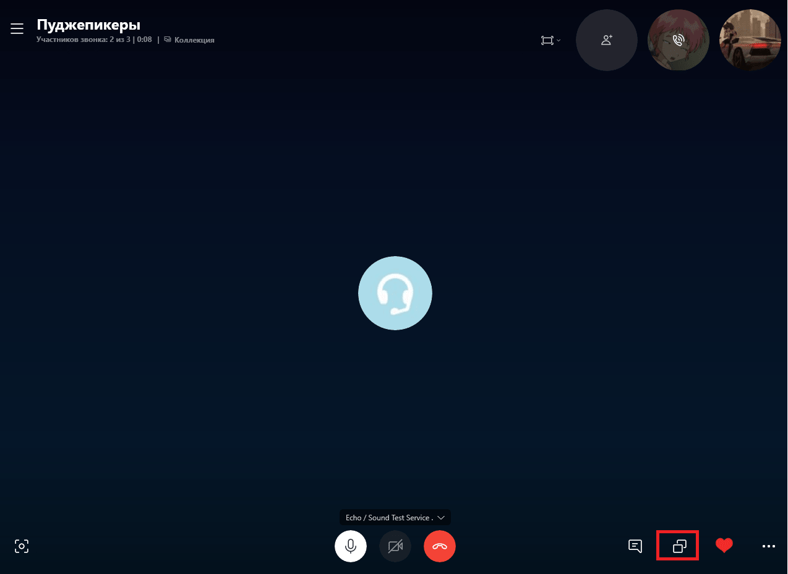
- Откроется окно демонстрации экрана. Настройте картинку так, как вам нужно;
- После всех настроек нажмите кнопку «Демонстрация экрана» в середине окна;
- Готово! Теперь вы можете выводить на свой экран любые картинки, презентации и другие файлы, а все участники конференции будут их видеть.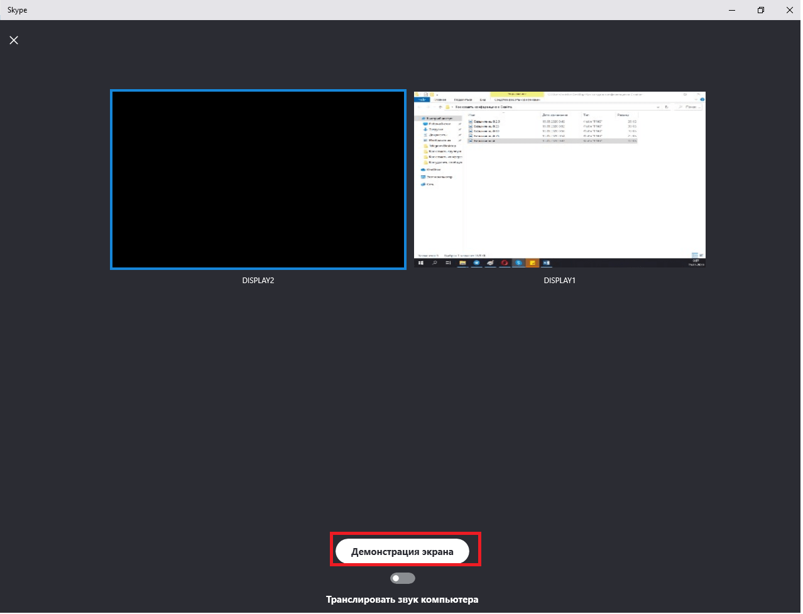
{kind=link}
{kind=link}
{kind=link}
Как присоединится к беседе
Если вы не успели присоединиться к звонку, или конференция уже давно началась, и вы хотите к ней присоединиться, то это можно сделать. Чтобы присоединиться к уже начавшейся беседе, совершите следующие действия:
- Откройте чат своей конференции;
- Нажмите на кнопку «Присоединиться к звонку» в правом верхнем углу, где ранее были кнопки начала звонка;
- Готово! Теперь вы подключились к разговору своей конференции, можете общаться, включать демонстрацию экрана и т.д.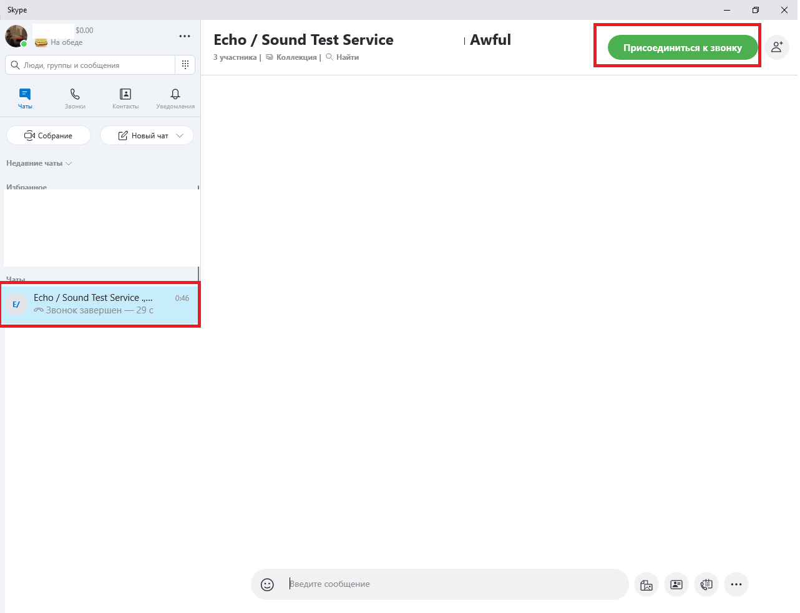
{kind=link}
Как создать конференцию в Скайп на мобильном
Позвонив человеку или своему групповому чату, вы можете создать собственную онлайн конференцию, добавив в этот разговор новых участников. Чтобы это сделать, совершите следующие действия:
- Откройте чат с группой или человеком, с которыми вы хотите создать конференцию;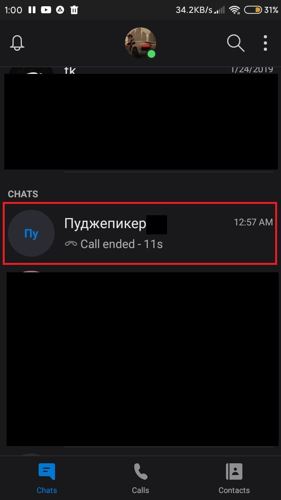
- В окне чата в правом верхнем углу найдите и нажмите кнопку совершения звонка;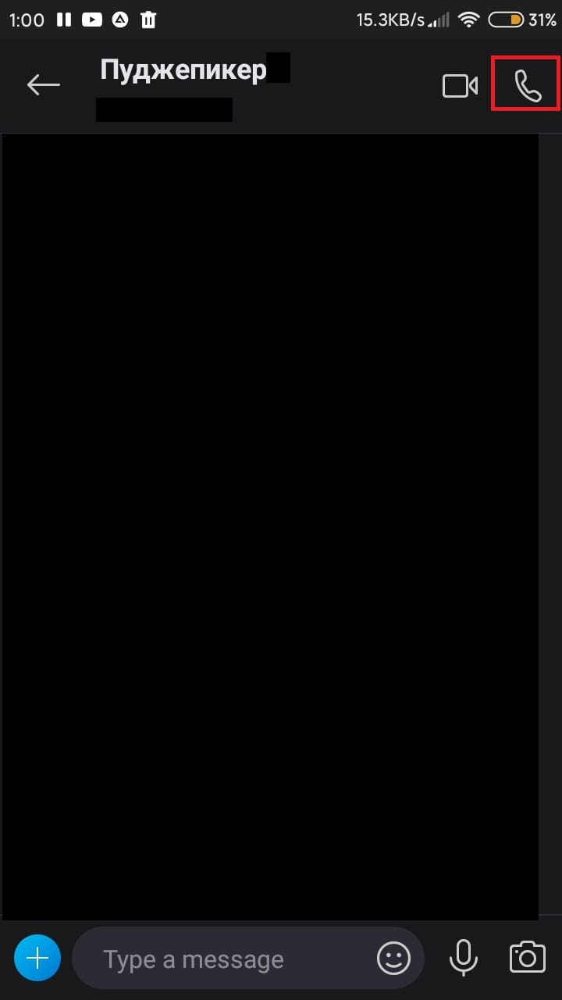
- Откроется окно вызова. В нем вам нужно дополнительное меню, кнопку которого вы найдете в правом нижнем углу звонка;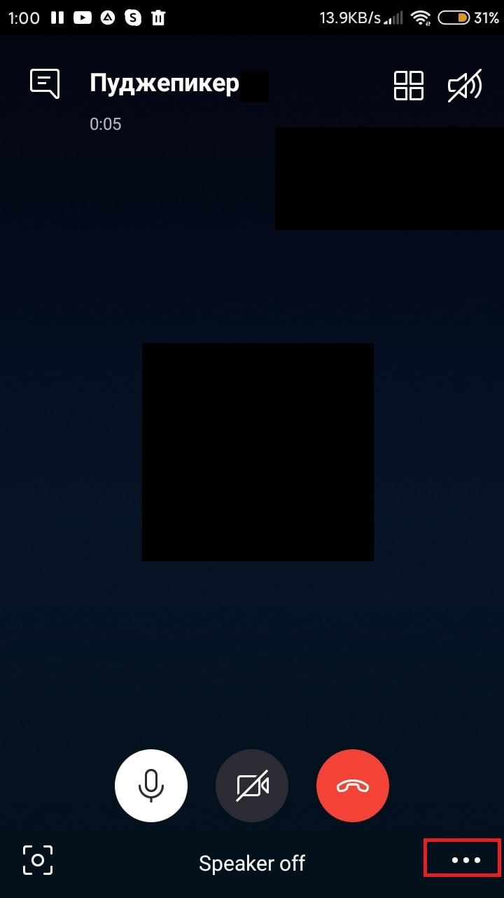
- Откроется дополнительное меню. В нем найдите кнопку для добавления новых людей в звонок. Нажмите ее;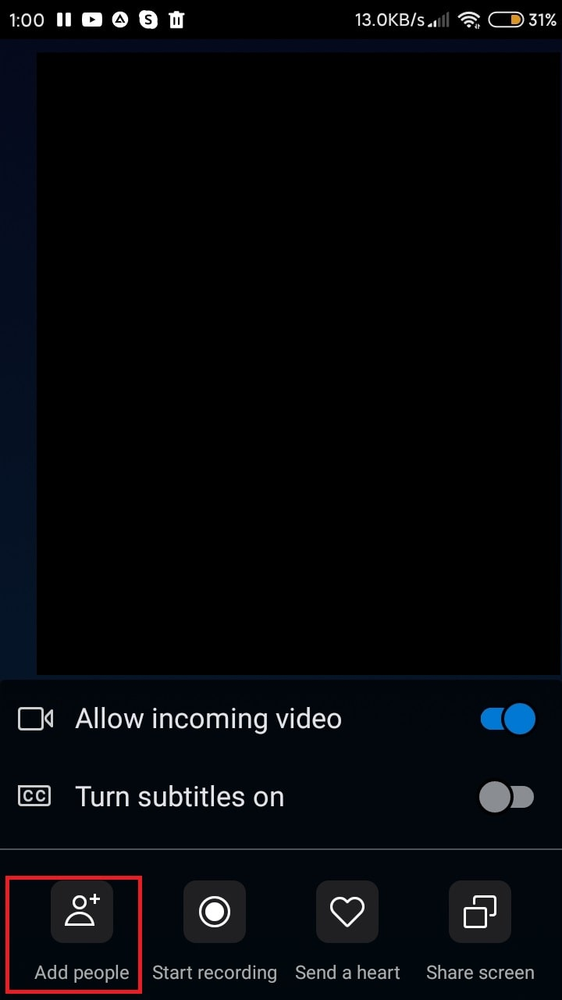
- Откроется окно добавления людей со списком из всех контактов, с которыми вы ранее общались. Для поиска определенных людей можно воспользоваться поисковиком сверху;
- Найдите и выделите всех нужных вам людей. Чтобы выделить контакты, нажимайте по их именам. Если контакт выделен, рядом с ним загорится синий кружок с галочкой;
- Как только вы выделите всех нужных людей, нажмите кнопку «Добавить» в правом верхнем углу.
{kind=link}
{kind=link}
{kind=link}
{kind=link}
Важно! Участвовать в чате могут до 25 человек, а после участия 11 человек у всех отключается возможность передачи видео с вашей веб-камеры.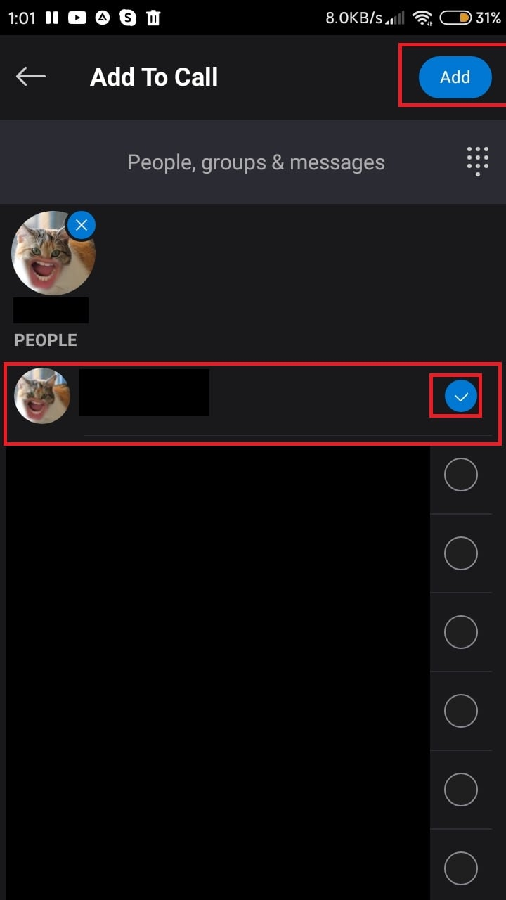
{kind=link}
После окончания звонка будет создан новый групповой чат с участниками конференции, что удобно для созыва следующей видеоконференции и онлайн общения между всеми ее участниками. С этой группой будут связаны следующие инструкции.
Как показать презентацию
Демонстрация экрана – одна из самых важных функций для рабочих и учебных конференций, ведь через нее можно удобно показывать свои презентации, медиа файлы и учебный материал. Причем этот материал вы будете показывать в прямом эфире для всех участников конференции, а вы сами можете попутно его объяснять. Чтобы показать презентацию, совершите следующие действия:
- Позвоните всем участникам конференции, если вы этого еще не сделали;
- В окне звонка откройте дополнительное меню, нажав на кнопку в правом нижнем углу;
- Откроется дополнительные функции звонка. Нажмите на кнопку «Демонстрация экрана», после чего все действия на экране вашего телефона будут видны и всем участникам конференции в прямом эфире;
- Если Скайп на вашем устройстве попросит разрешения снимать ваш экран телефона, согласитесь.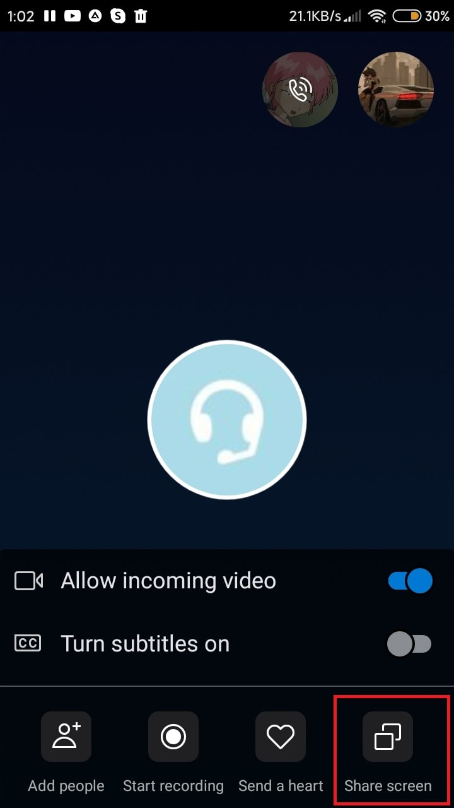
{kind=link}
{kind=link}
Как присоединится к звонку
Если участники конференции начали звонок без вас, или вы просто не успели его принять, то вы можете спокойно присоединиться к текущему звонку. Для того, чтобы присоединиться к уже начатому звонку, совершите следующие действия:
{kind=link}